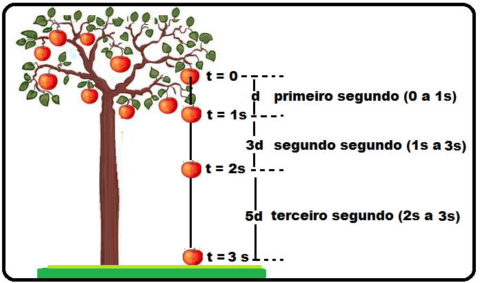

O que é queda livre na física?
É qualquer corpo abandonado a partir do repouso ou lançado verticalmente para baixo com V0 (velocidade inicial) diferente de 0 m/s, descrevendo um movimento uniforme acelerado.
Na queda livre, a gravidade pode ser positiva ou negativa. Por convenção, a gravidade é positiva quando é registrado o aumento da velocidade do objeto em queda e negativa quando há a desaceleração ou diminuição da velocidade do objeto em queda.
Na figura, temos como exemplo a imagem de uma macieira, onde uma maçã cai ao solo no tempo de 3 segundos. Observe que a velocidade da maçã vai aumentando à medida que a maçã vai caindo, e está sob o efeito da aceleração da gravidade, aproximadamente 9.8 m/s². Podemos adotar, nesse caso, a gravidade com valor positivo.
As equações que vamos utilizar são as mesmas do MRUV, então se não tiver lido o conteúdo de MRUV, recomendo que acesse o link e leia.
À seguir, veja as equações utilizadas na queda livre:
- S = Posição Final em metros
- S0 = Posição inicial em metros
- V0 = velocidade inicial em metros
- t = tempo em segundos
- Δs = altura da queda em metros
- g = gravidade (aproximadamente 9.8 m/s²)
- V = velocidade final em m/s
Função horária da posição: S = So + V0 * t ± (gt²) / 2
Torricelli: V² = V0² ± 2g * Δs
Função da velocidade: V = V0 ± gt